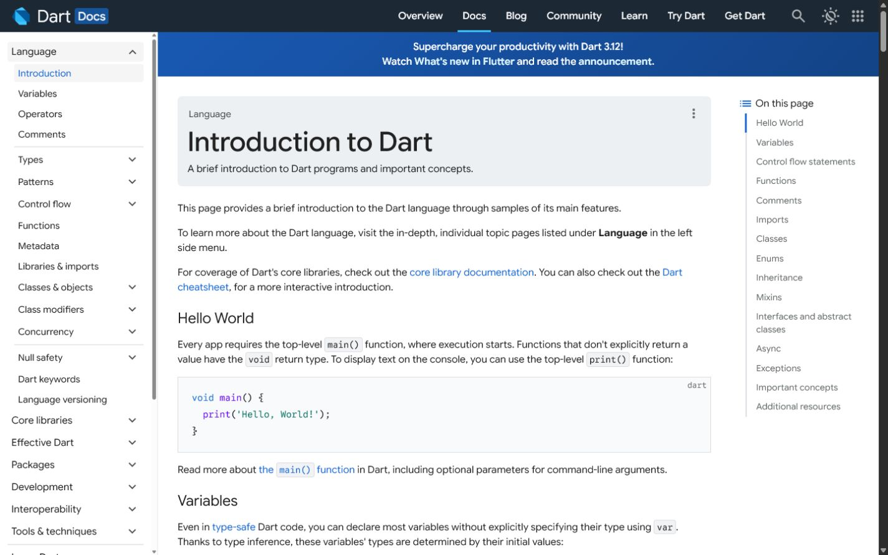

Assessment
Review + Practical Exam
Student Edition - expanded lesson explanations
Let's speed-run the key concepts before the exam:
App types, Frontend/Backend, APIs, Requirements, User Stories, User Flow
UI/UX, CARP, Colors, Typography, Wireframing, Screen Patterns, Navigation
Database tables, Fields, Relationships, Foreign Keys, Dart basics
| Term | Definition |
|---|---|
| Frontend | What users see and interact with (UI) |
| Backend | Server, database, logic behind the scenes |
| API | Messenger between frontend and backend |
| CRUD | Create, Read, Update, Delete operations |
| MVP | Minimum Viable Product (simplest working version) |
| User Story | As a [user], I want [action], so that [benefit] |
| Concept | Meaning | Example |
|---|---|---|
| Table | Category of data | items, profiles |
| Field | Property/column | title, status, user_id |
| Record | One entry/row | One specific item |
| Primary Key | Unique ID per record | id (uuid) |
| Foreign Key | Links to another table | user_id → profiles |
| One-to-Many | 1 user → many items | user_id in items table |
Planning phase is DONE. Now we BUILD. 🔨
Your wireframes and data plan become REAL next session!
Requirements, user stories, screen lists, and flows explain what the app must do.
UI/UX principles and wireframes organize what users see and how they move.
Tables store the records; Dart expressions transform and validate values.
Memorizing isolated definitions makes it difficult to explain how an app works as a system.
Connect each term to the screen, data, or behavior it controls.

🚀 We start building in FlutterFlow!
Make sure your FlutterFlow account is ready and you can log in.
✅ REQUIRED: Log into flutterflow.io before next session. Verify your account works.